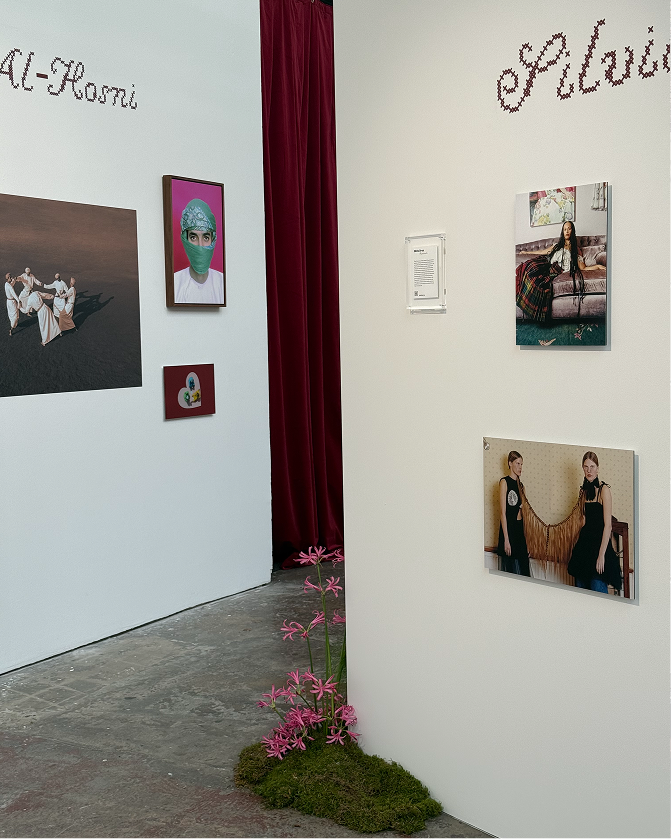
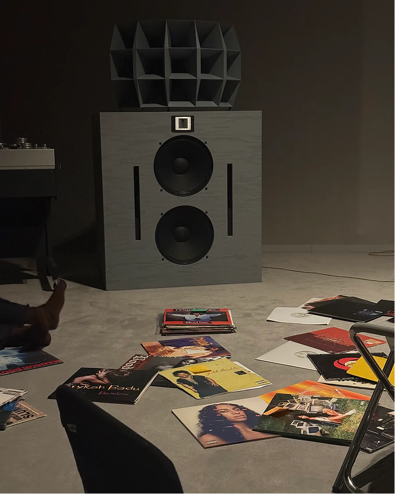
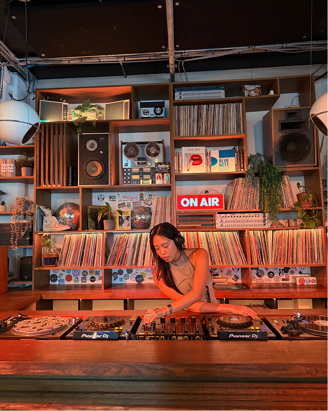
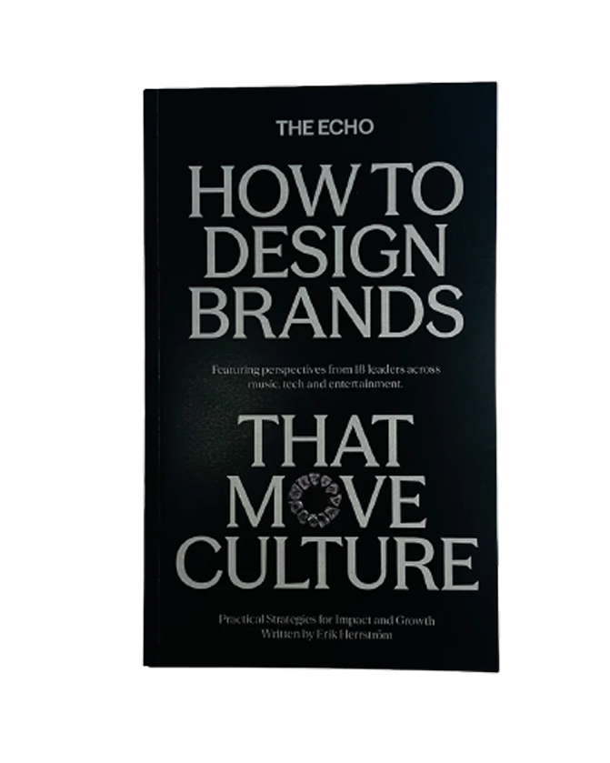
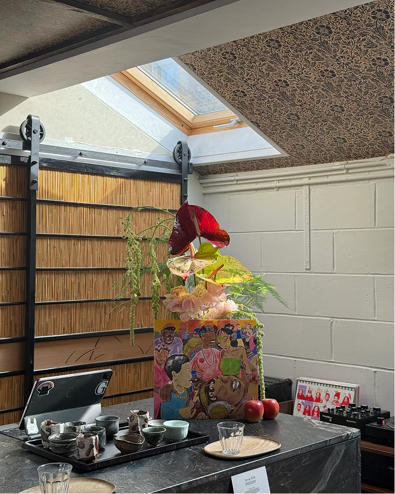

Hey, I’m Danica. Welcome to my desk!
It looks different all the time. I like stepping into other people’s desks - across industries, disciplines, and ways of working - and building software and hardware from the tools, problems, and perspectives I find there.
I study cognition and mechanical engineering at UC Berkeley. Oh, and I love making videos.
It looks different all the time. I like stepping into other people’s desks - across industries, disciplines, and ways of working - and building software and hardware from the tools, problems, and perspectives I find there.
I study cognition and mechanical engineering at UC Berkeley. Oh, and I love making videos.
With Orang Laut, we built a website as a living archive for and with Singapore's Southern Islanders.
WEB DESIGN
WEB DEVELOPMENT
With Tayo, we built a website for an archipelagic design and experience studio rooted in Filipino storytelling
WEB DESIGN
WEB DEVELOPMENT
At T2, I designed the membership experience that gave community admins control over how members join and participate.
product design
ux/ui
Through Nature Kwentour, we designed a nature program, digital archive, and exhibition connecting London and Siargao.
cultural programming
design education
With Lokal Lab, we built a website to platform island knowledge, and connect the local community with partnerships.
WEB DESIGN
WEB DEVELOPMENT

exhibition that inspired me

love going to hi-fi listening experiences

getting to know london through djing

been thinking about what it means to design for culture

learning the art of flower arrangemtns